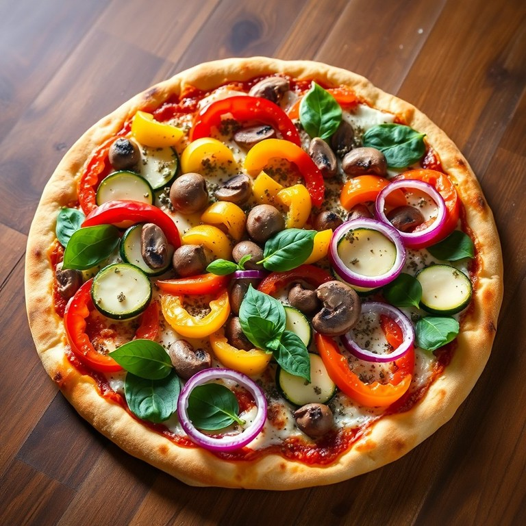
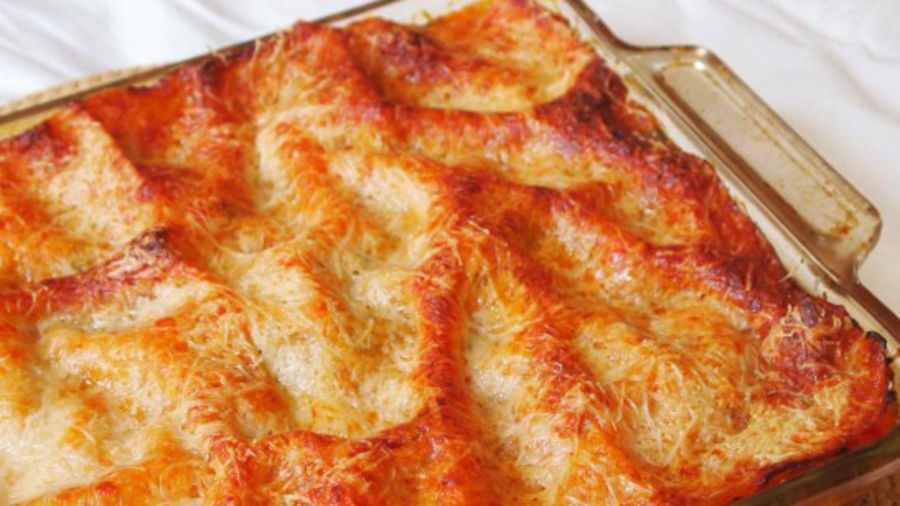
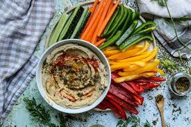
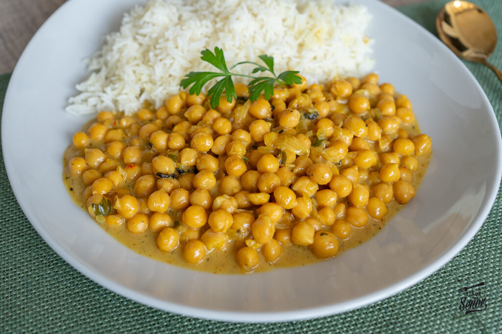
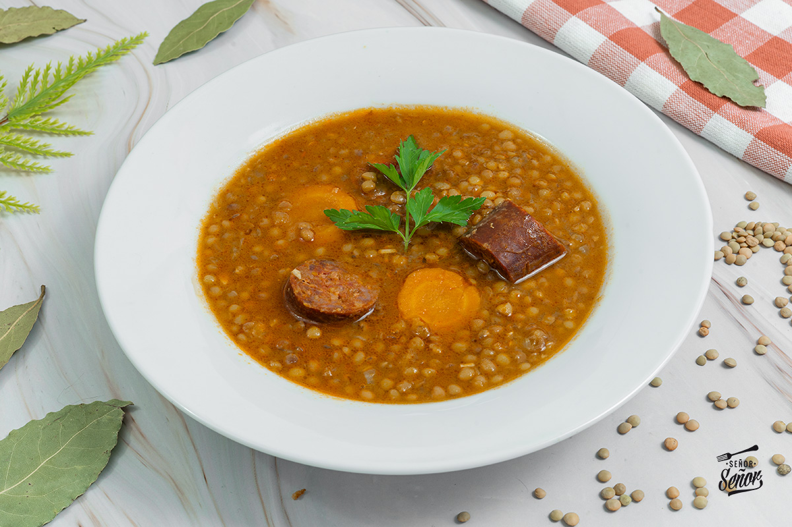

Pizza vegetariana  Fuente: pizza vegetariana Ingredientes Harina de fuerza, mozzarella, rúcula Pimientos, berenjena, cebolla Pasos Formar la masa, fermentar, preparar ingredientes. Hornear con verduras y servir con rúcula.
Lasaña de vegetales  Fuente: lasaña Ingredientes Verduras, ricotta, pasta, parmesano Pasos Sofreír verduras, montar capas y hornear.
Hummus con crudités  Fuente: hummus Ingredientes Garbanzos, tahini, limón, comino, crudités Pasos Triturar ingredientes, servir con aceite y crudités.
Curry de garbanzos  Fuente: curry Ingredientes Garbanzos, cebolla, ajo, especias, leche de coco Pasos Pochado, añadir ingredientes y cocer.
Lentejas con arroz  Fuente: lentejas Ingredientes Lentejas, verduras, arroz, especias Pasos Remojar, preparar sofrito, cocer y añadir arroz.